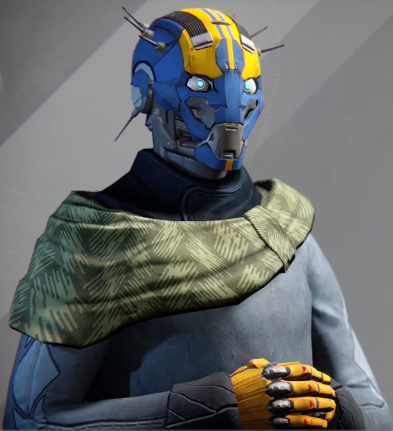

Phone: Yes got one
Email: Banshee-44@gmail.com
Twitter: @Banshee-44
PROFESSIONAL EXPERIENCE
-
Enlisted in the military
Was a footsoldier on the front lines
Highly skilled with all types of weapons and firearms
Retrieved a rare and useful weapon from the enemy's hands
Special Forces
Took part in many different vital missions
-
self-employed/Gunworkshop.
Managing a successful gun workshop
Ability to repair most firearms as well as normal weapons
Able to make firearms and weapons from scratch with just the raw materials
Collector of extreme rare weapons
Designing new weapons
EDUCATION
Self taught
SKILLS
- Mastered the art of smithing
-
Able to do high maintenance work as well as upgrading highly complex
objects
-
Higher physical prowess compared to most people as well as athletes
-
Creating and developing highly complex creations from scratch
SPOKEN LANGUAGES
- English
- French
- Italien
- German
- Spanish
- Japanese
- Portuguese
- Russian
- Polish
REFERENCES
- Best friend - Cayde -6
- Friend/Comrand in arms - Young wolf
_